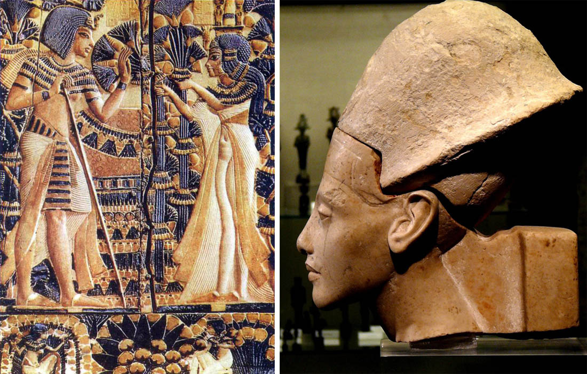
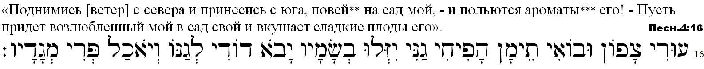
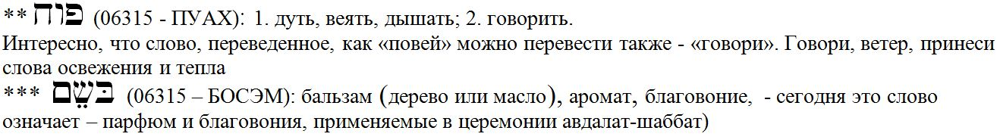
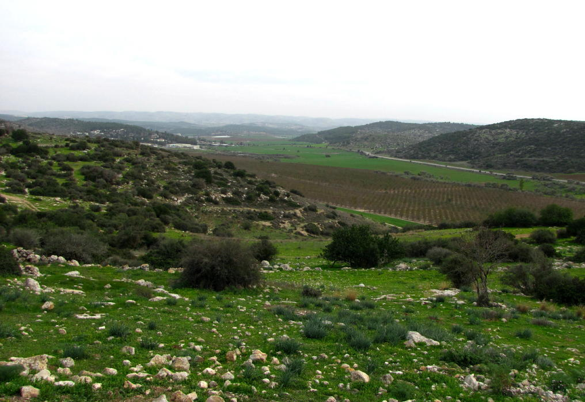
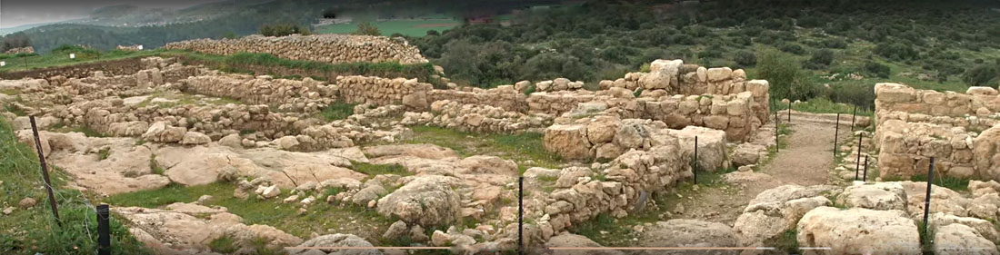
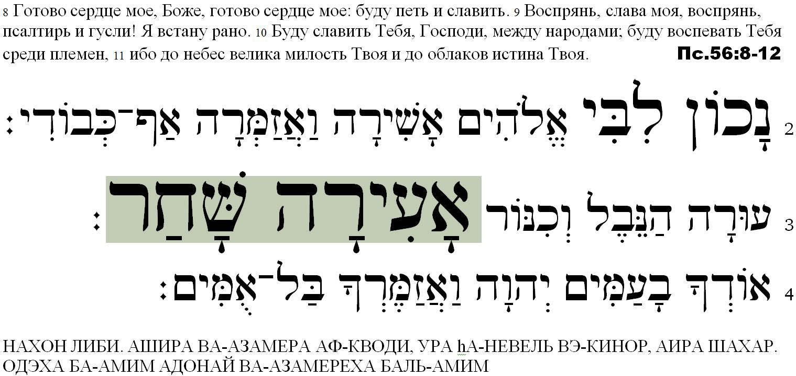
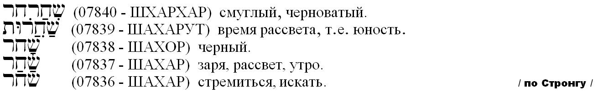
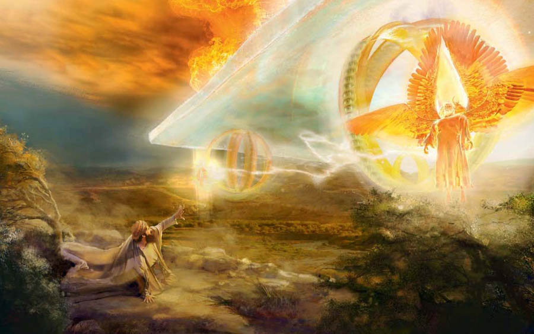

АРОМАТЫ СЕВЕРНОГО ВЕТРА
«Поднимись [ветер] с севера и принесись с юга, повей на сад мой, - и польются ароматы его! - Пусть придет возлюбленный мой...». Песн.4:16
Ветер, играющий на арфе / эолова арфа /
Есть комментаторы, считающие нэвель не струнным, а духовым инструментом. Ветер способен играть и на духовых
С древних времен на Ближнем Востоке говорили о Северном ветре. Речь - не столько об атмосферном явлении, а символическом смысле, наполняющем это название - Северный ветер.
В современном Израиле это понятие «Северный ветер» по прежнему в употреблении. Существует ешива с таким названием. «Руах Цфонит» (северный ветер) – также имя хасидской музыкальной группы.
В XIVв. до н.э. в др.Египте фараон Эхнатон, посвящая возлюбленной своей стихи, начертал на драгоценном саркофаге, обложенном золотыми пластинами: «Ее дыхание подобно дыханию северного ветра, приносящего великолепные ароматы».
Тутанхамон и его жена в саду / рельеф /. Голова фараона Эхнатона

Удивительно схожие, возможно, вдохновленные египетским поэтом слова, встречаем более четырех веков спустя в «Песне Песней» царя Шломо:

Здесь, по всей вероятности, имеется в виду Северный ветер (ивр. ЦАФОН), пробуждающий к жизни, принося освежение и влагу, а ветер южный (ивр. ТЕЙМАН) приносит тепло для вызревания плода.

.
Зеев Дашевский так комментирует эти слова Песни Шломо:
4:16 "Если я сад благовоний, говорит Шуламит, - Пусть сильнее дуют ветры и разносят запах моих благовоний по всей округе, чтобы милый нашел его (запах, т.е. меня)...".
Ветер встречаем и в поэзии Давида - отца Шломо. Часто он выступает в роли посланника Всевышнего.
Пс.103:3 «…устрояешь над водами горние чертоги Твои, делаешь облака Твоею колесницею, шествуешь на крыльях ветра». Пс.147:7 «Пошлет слово Свое, и все растает; подует ветром Своим, и потекут воды».

.Долина Аэла
Северный ветер - частый гость в долине Аэла. Совсем недавно здесь, где некогда пролегала граница с Гефским царством, израильские археологи раскопали руины города-крепости Хирбет Каяфа (конец 11 – нач.10в. до н.э. – времена правления царя Давида).
Поскольку завсегдатаем этих мест был северный ветер, не исключено, что именно здесь, в своем дворце, Давид воспевает (Пс.56:8-9 и в Пс.107:3): «Готово сердце мое, Боже, готово сердце мое: буду петь и славить. Воспрянь, слава моя, воспрянь, псалтирь и гусли! Я встану рано».
для просмотра фото в полном, кликните на фото

Ворота в крепость Хирбет Каяфа времени правления царя Давида/ X-XI в. /В тексте этих псалмов нет упоминания о северном ветре. О нем говорит мидраш, поясняющий слова псалмов:
Северный ветер пробуждал царя. Давид ожидал когда повеет в его дворце северный ветер, и когда в полуночи сам собой запоет невель / синод. - псалтирь /, оставленный у его изголовья, когда рука ветра начинала перебирать его струны. Давид, будучи поэтом, ждал, чтобы услышать волнующие звуки струн невеля и песнь северного ветра. И тогда он начинал славить и превозносить Всевышнего, наполняясь Его Духом.
Вспомним, что на еврейском языке слово РУАХ имеет два значения – ветер и дух. Тоже слово, но читаемое иначе – РЭАХ – значит запах. Также, как ветер и запах, Дух Всевышнего не виден глазу, но различимо действие, которое Он производит.
Слова псалма «Я встану рано» (АИРА ШАХАР), если переводить их с иврита буквально, должны звучать, как «разбужу утреннюю зарю».

И здесь доступны два понимания: 1. встану раньше зари, так что не она меня, а я ее как бы разбужу. 2. Я встану и буду пророчески славить Всевышнего и тогда пробудится и сама заря и все вокруг, пробуждение придет на все творение. Т.е. пророческое пение Давида, вдохновленное северным ветром, творит здесь некое духовное пробуждение, ибо придет Северный ветер и принесет слово Всевышнего, освежение от Него. И все творение пробудится и перейдет от тьмы в свет т.к. восстанет заря.
Интересно и само слово ШАХАР (заря). Вот несколько значений слов с этим же корнем:

ШАХАР – это процесс перехода от тьмы (черного) к свету, от незрелого – к зрелости, это стремление и поиск.Давид пел и пророчествовал. Он изменял реальность, пробуждая зарю, побуждая творение к стремлению перехода из тьмы в свет.
8 Готово сердце мое, Боже, готово сердце мое: буду петь и славить.
9 Воспрянь, слава моя, воспрянь, псалтирь и гусли! Я встану рано.
10 Буду славить Тебя, Господи, между народами; буду воспевать Тебя среди племен,
11 ибо до небес велика милость Твоя и до облаков истина Твоя.
12 Будь превознесен выше небес, Боже, и над всею землею да будет слава Твоя! /Пс.56:8-12/
Для отцов наших с древних времен понятие «Северный ветер» несло в себе освежение, прохладу и исцеление, и пробуждение к новой жизни, изобилие и радость так ожидаемого дождя, как сказано в Прит.25:23: «Северный ветер производит дождь, а тайный язык - недовольные лица».
Видение Славы Господней пророка Йехезкейла

Интересно также, что Северный ветер - действующее лицо видения славы Господней пророка Иехезкейла (Иез.1:4-6):
«И я видел, и вот, бурный ВЕТЕР шел ОТ СЕВЕРА, великое облако и клубящийся огонь, и сияние вокруг него, а из средины его как бы свет пламени из средины огня; и из средины его видно было подобие четырех животных, - и таков был вид их: облик их был, как у человека; и у каждого четыре лица, и у каждого из них четыре крыла..."
Северный ветер в Библии часто - Посланник Всевышнего, приносящий Его слово, исцеление, обновление.